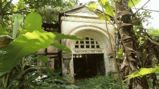
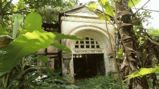

Branch E:
Pieter Cornelis van Motman
Not many things are known about the youth of Pieter Cornelis (uncle Piet of Jamboe). We know that he was first navigating officer from June till December 1840. It is not known why so short and in accordance with which plan. Although Pieter never had children of his own, he was surrounded by them in his whole life. When he was only 26 he was prepared to take in and educate the child of his brother Frits (branch B) from his relation with the Chinese woman TAN Kang Nio. At birth the child got the name Hendrik Pieter MOTMAAN. And 20 years later he took pity on the little Jan, the child that after the decease of his brother Jan (branch D) was born from his relation with the Chinese woman TAN Kim Nio.
When Pieter Cornelis was 46 he married (in 1868) for the first time. The bride was Jacoba Djiëm and a good year after her decease in 1877 he married again. His second wife was Susanna van Kakum, the widow of Frederik Albrecht who died so early that he never saw his own daughter Frédérique. After the decease of her husband Susanna lived some years with her daughter at Dramaga with her aunt and uncle (branch C) where she lived also before her marriage. That’s the place where Pieter probably had met her. The fact is that the mother of Susanna was a Van Swieten and sister of the wife of Jacob, the brother of Pieter. That’s also why Jacob was a witness at their wedding in Dramaga. We know from the marriage certificate that brother Frits was a witness too.
Although Frédérique was a Albrecht and not a Van Motman she has been considered as such quite a long time. Later, after her marriage with Henri Suermondt, her daughter Nonnie maintained the relation with the family finding among others expression in the comprehensive correspondence which she conducted with several members of the family among others the British members of branch C.
Fortunately a considerable part of this correspondence has been kept. Her husband George Scheffel as well was interested in the family re the family papers which he gathered and left to us. All together sufficient reason to admit them in the Van Motman book.
The changes are that Regina de Haan, the later wife of Jan (branch D) and only a little older than Frédérique, lived from her youth up as well at the home of Pieter. The girls are seen together many times on pictures. This relation had a continuation in that way that later Wally, a daughter of Jan and Regina, married a cousin of Frédérique, Willem Luymes, his mother Geertruida Albrecht being a sister of the father of Frédérique.
Pieter C. didn’t get later a lot of fun out of his foster son Hendrik Pieter whom Pieter had given in 1878 the tea land Nanggoeng in usufruct. Hendrik managed the estate so badly that Pieter was obliged to mortgage the land in 1883 up to fl 600.000,-- against an interest of 6% in favour of the Weeskamer (institute for orphans).
According to a family comment Hendrik made very many debts, such as by making huge expenses during a holiday in Paris. Pieter calculated at a given moment that Hendrik owed him the huge amount of fl 1.500.000,--, in those days an immense amount. Pieter himself too was almost ruined but with the commitment of his Suze he managed to keep things going. While the Weeskamer didn’t receive any interest nor redemption Nanggoeng was sold by public auction in 1898. As nobody made an offer the Weeskamer herself became proprietor. A few years later Nanggoeng was the first land that was bought by the government for an amount of fl 260.000,-- in the scope of buying up private landed property.
On the occasion of the 80th birthday of Pieter a family portrait was made, on which 43 persons who were mainly members of the branches C and D.
Pieter Cornelis van Motman